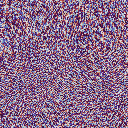
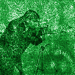
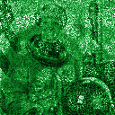
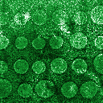
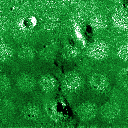

ДОЭ
Фаза от −π до π. В doe.png: 0 = −π, 255 = +π.
НИЯУ МИФИ · лаборатория «Фотоника и информационная оптика»
Один фазовый ДОЭ 128×128 — и на расстояниях 24,1, 25,3, 26,5 и 27,7 мм по очереди фокусируются четыре разных изображения. Нейросеть рассчитывает такой элемент за один проход.





выберите набор — и сразу в студию
загрузите 4 изображения — получите один ДОЭ
i-е изображение фокусируется на i-м расстоянии. Перетащите файлы или нажмите на ячейку. Цветные приводятся к яркости, другой размер — к 128×128.
Нейросеть даёт ДОЭ за один проход; итерационные методы — эталон для сравнения.
Добавьте 4 изображения или выберите тестовый набор.
результат синтеза
Фаза от −π до π. В doe.png: 0 = −π, 255 = +π.
3D-просмотр
Двигайте плоскость наблюдения: изображения по очереди фокусируются на своих расстояниях. Это и есть «трёхмерная сцена» из одного плоского элемента.
Протокол организаторов: сравниваются амплитуды, каждое изображение нормировано на 1. SSIM — локальный (skimage, окно 7×7), SSIM со слайда — формула ИСС по всему изображению.
физика, нейросеть и честные метрики
Поле в плоскости восстановления — одно преобразование Фурье от ДОЭ, умноженного на квадратичную фазу своего расстояния. Четыре расстояния — четыре FFT.
U-Net по четырём изображениям предсказывает фазу поля в каждой плоскости; одно обратное распространение даёт ДОЭ. Обучение без разметки — через дифференцируемую физику.
PCC и SSIM по 8-битным PNG: ДОЭ сохраняется, перечитывается, восстанавливается. Амплитуды, каждое изображение нормировано на максимум.
Многоплоскостный Gerchberg–Saxton и Adam по фазе — сотни итераций. С ними сеть сравнивается по качеству и по времени.